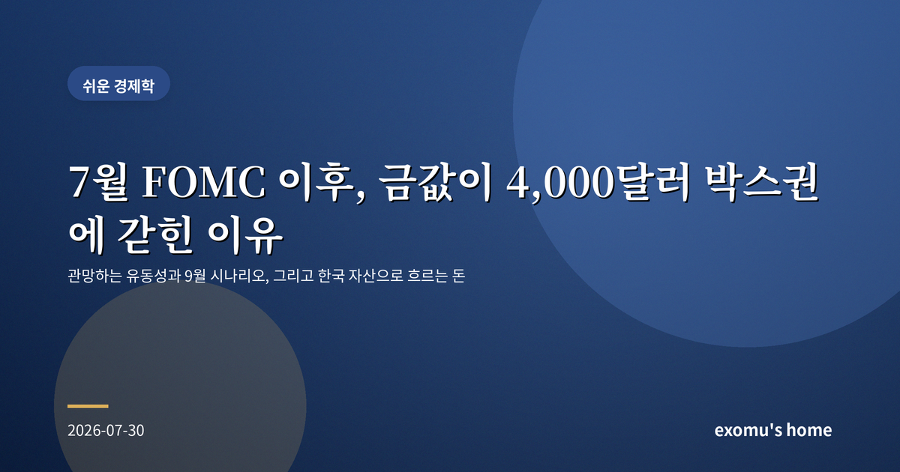
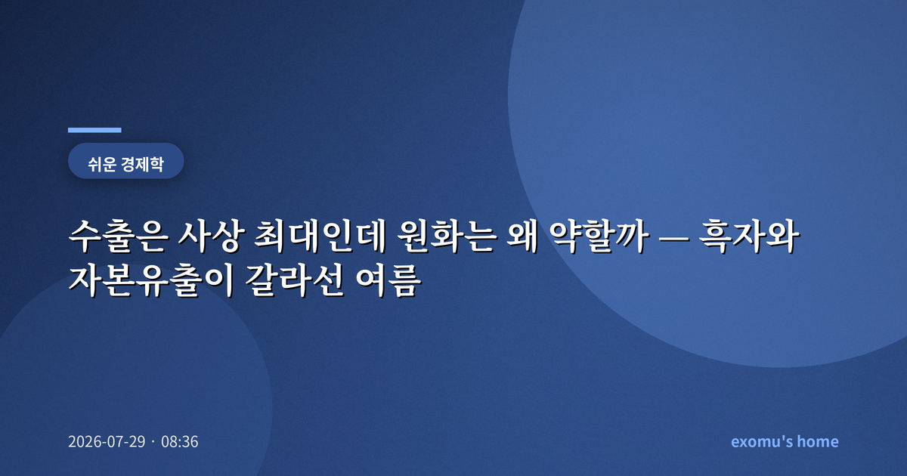
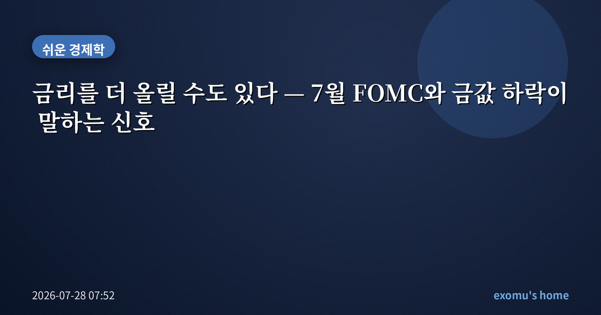
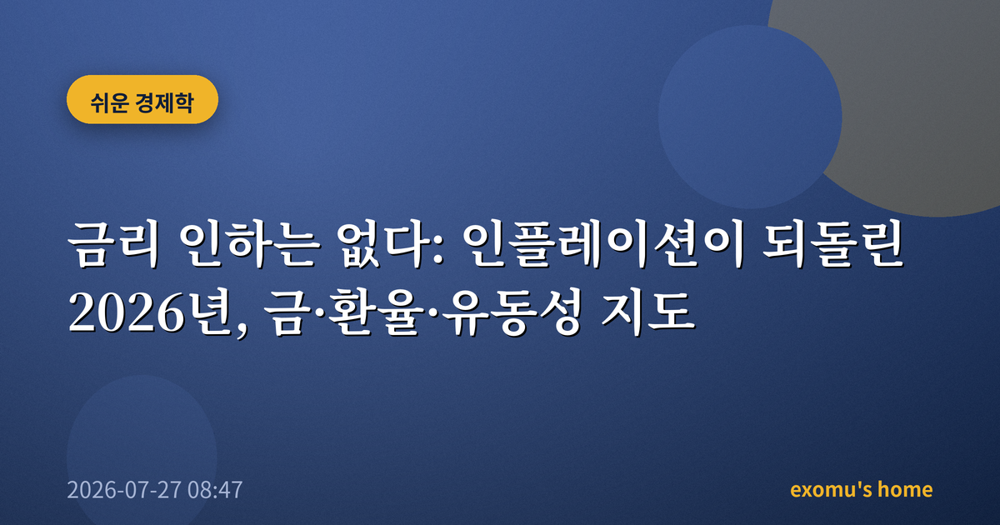
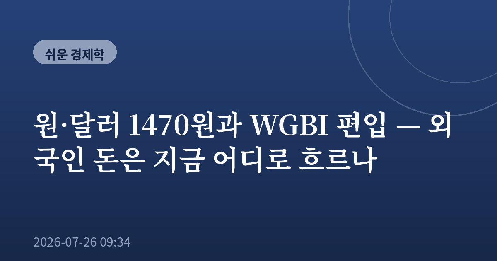

쉬운 경제학
복잡한 경제를 유동성의 흐름으로 쉽게 읽습니다.

쉬운 경제학
7월 FOMC 이후, 금값이 4,000달러 박스권에 갇힌 이유
2026-07-30 08:23

쉬운 경제학
수출은 사상 최대인데 원화는 왜 약할까 — 흑자와 자본유출이 갈라선 여름
2026-07-29 08:36

쉬운 경제학
금리를 더 올릴 수도 있다 — 7월 FOMC와 금값 하락이 말하는 신호
2026-07-28 07:52

쉬운 경제학
금리 인하는 없다: 인플레이션이 되돌린 2026년, 금·환율·유동성 지도
2026-07-27 08:47

쉬운 경제학
원·달러 1470원과 WGBI 편입 — 외국인 돈은 지금 어디로 흐르나
2026-07-26 09:34

쉬운 경제학
코스피 조정, AI 반도체 거품일까 기회일까
2026.07.26

쉬운 경제학
기준금리 2.75% 시대, 내 통장은 어떻게 지켜야 할까
2026.07.26